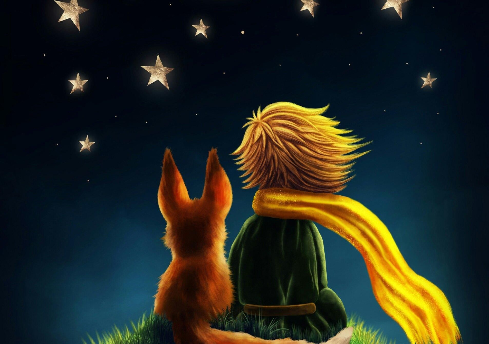

Маленький принц
XXVII
И вот прошло уже шесть лет… Я еще ни разу никому об этом не рассказывал. Когда я вернулся, товарищи рады были вновь увидеть меня живым и невредимым. Грустно мне было, но я говорил им:
— Это я просто устал…
И все же понемногу я утешился. То есть… Не совсем. Но я знаю, он возвратился на свою планетку, ведь, когда рассвело, я не нашел на песке его тела. Не такое уж оно было тяжелое. А по ночам я люблю слушать звезды. Словно пятьсот миллионов бубенцов…
Но вот что поразительно. Когда я рисовал намордник для барашка, я забыл про ремешок! Маленький принц не сможет надеть его на барашка. И я спрашиваю себя: что-то делается там, на его планете? Вдруг барашек съел розу?
Иногда я говорю себе: «Нет, конечно, нет! Маленький принц на ночь всегда накрывает розу стеклянным колпаком, и он очень следит за барашком…» Тогда я счастлив. И все звезды тихонько смеются.
А иногда я говорю себе: «Бываешь же порой рассеянным… тогда все может случиться! Вдруг он как-нибудь вечером забыл про стеклянный колпак или барашек ночью втихомолку выбрался на волю…» И тогда все бубенцы плачут…
Все это загадочно и непостижимо. Вам, кто тоже полюбил Маленького принца, как и мне, это совсем, совсем не все равно: весь мир становится для нас иным оттого, что где-то в безвестном уголке вселенной барашек, которого мы никогда не видели, быть может, съел не знакомую нам розу.
Взгляните на небо. И спросите себя: «Жива ли та роза или ее уже нет? Вдруг барашек ее съел?» И вы увидите: все станет по-другому…
И никогда ни один взрослый не поймет, как это важно!

Это, по-моему, самое красивое и самое печальное место на свете. Этот же уголок пустыни нарисован и на предыдущей странице, но я нарисовал еще раз, чтобы вы получше его разглядели. Здесь Маленький принц впервые появился на Земле, а потом исчез.
Всмотритесь внимательней, чтобы непременно узнать это место, если когда-нибудь вы попадете в Африку, в пустыню. Если вам случится тут проезжать, заклинаю вас, не спешите, помедлите немного под этой звездой! И если к вам подойдет маленький мальчик с золотыми волосами, если он будет звонко смеяться и ничего не ответит на ваши вопросы, вы, уж конечно, догадаетесь, кто он такой. Тогда — очень прошу вас! — не забудьте утешить меня в моей печали, скорей напишите мне, что он вернулся…